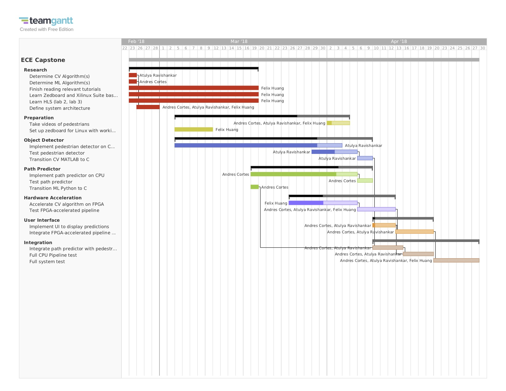

We are implementing an end-to-end pipeline that will be capable of doing real-time pedestrian path prediction. Given a scene with pedestrians walking through it, our system will be able to predict the path each pedestrian will take through the scene. Because the steps involved in this are quite computationally intensive, we will be using an FPGA to accelerate the pipeline, which should allow us to run it in real time.
This system has applications in many different areas. Successful path prediction will allow engineers to analyze foot traffic in public spaces such as train stations to help ease congestion. Pedestrian movement prediction can also be used for collision avoidance in autonomous vehicles. More generally, human behavior prediction can be used to do things like optimize the positioning of products in large stores. Outside of engineer, a system like this could also be used for applications like sports analysis, where coaches could predict the movements of players in different formations and use that data to come up with team tactics.
There are 4 major parts of our system: Object/Person Detector, Path Predictor, Programmable Logic (FPGA on Zedboard), User Interface. The Object Detector will use HOG features to detect pedestrians in a frame. The Path Predictor will use Linear Regression to predict the pedestrians path given their current position and history of positions in the video. The Programmable Logic will accelerate the computation of the Object Detector and Path Predictor. The User Interface will display our system's prediction in a visually pleasing way.
The diagram below outlines our high-level architecture.
The table below shows the work distribution for this project. The key task categories match up to those found in the Gantt chart below.
| Task Category | Atulya | Andres | Felix |
|---|---|---|---|
| Research | |||
| Preparation | |||
| Object Detector | |||
| Path Predictor | |||
| Hardware Acceleration | |||
| User Interface | |||
| Integration |
Below is our planned schedule for the Spring 2018 semester. The Gantt chart outlines each of the tasks that need to be completed along with their expected duration.
